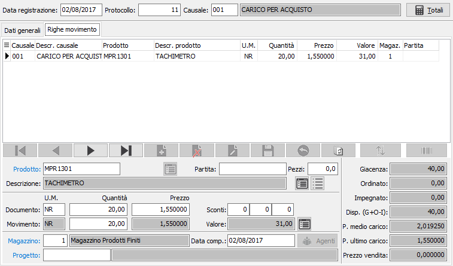
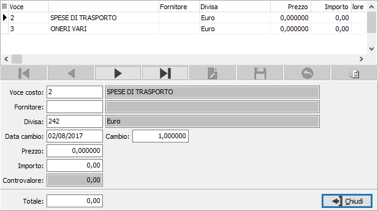
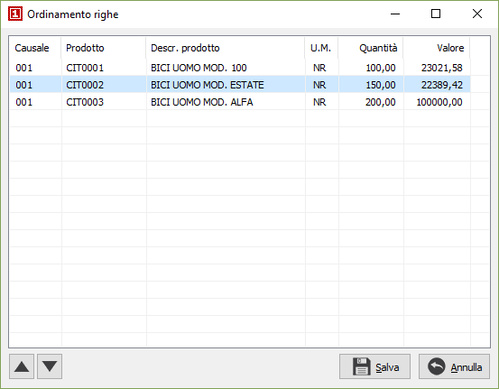
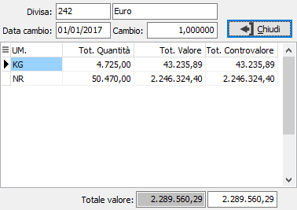

Tramite il pulsante Barcode, se presente ad attivo il relativo modulo è possibile inserire nel documento dati provenienti da lettori ottici.
Tramite il pulsante Barcode, se presente ad attivo il relativo modulo è possibile inserire nel documento dati provenienti da lettori ottici.Righe movimento
La finestra video è suddivisa in tre sezioni: la sezione superiore riporta sinteticamente gli estremi della registrazione (Data, numero e causale); la sezione centrale contiene la griglia in cui vengono visualizzati i righi inseriti; la sezione inferiore contiene il pannello di input che consente di inserire le informazioni relative ai vari prodotti. Il cursore si posiziona sul campo prodotto del pannello di input.

PRODOTTO: inserire il codice dell’articolo che si vuole trattare. Sul campo è attiva la ricerca (F9) sulla tabella anagrafica articoli, la funzione manutenzione (CTRL+W) per l‘eventuale memorizzazione di un nuovo articolo. A conferma viene visualizzata, nella sezione destra del video, l’esistenza corrente, l'ordinato, l'impegnato ed il disponibile dell’articolo richiamato relativamente al magazzino selezionato, il prezzo medio di carico ed il prezzo di ultimo carico.
PULSANTE CAMBIO CAUSALE: permette di selezionare un'altra causale, purché congruente con la principale.
PARTITA/COMMESSA: se previsto dalla causale, il cursore si ferma sul campo per l’inserimento del numero di lotto, partita o commessa rilevato dal documento.
Dati documento
Questi dati sono accessibili solo per i movimenti che riguardano i clienti ed i fornitori.
UNITÀ DI MISURA: Indica l'unità di misura del documento, può essere selezionata solo tra le tre unità di misura dell'articolo; se diversa dall'unità principale, la quantità di magazzino sarà rapportata tramite il coefficiente di conversione. Tramite il tasto funzione F11 si può accedere alla finestra relativa al fattore di conversione.
QUANTITÀ: Inserire la quantità rilevata nell'unità di misure del documento.
PREZZO: Inserire il prezzo unitario del prodotto nella divisa del documento. Se non espresso nella divisa di gestione sarà effettuata la conversione per determinare il prezzo del magazzino.
Dati movimento
PEZZI: campo numerico che indica la seconda quantità del movimento, se attivato da configurazione.
UNITÀ DI MISURA: viene visualizzata, senza possibilità di modifica, l'unità di misura 1 memorizzata sull’anagrafica articolo.
QUANTITÀ: se presenti i dati del documento viene proposta in automatico, altrimenti deve essere inserita manualmente. Se attiva la gestione del dettaglio quantità per questo documento, è presente il bottone dettaglio, a destra del campo descrizione, tramite il quale sarà visualizzata la relativa finestra di dettaglio quantità; l'attivazione della finestra avviene comunque in automatico al momento dell'accesso al campo quantità.
PREZZO: se presenti i dati del documento viene proposto in automatico, altrimenti può essere inserito manualmente; se omesso, verrà calcolato automaticamente per divisione fra il valore inserito e la quantità.
VALORE: normalmente contiene il risultato dell'operazione: quantità x prezzo unitario. Può essere inserito dall’utente. In questo caso, concorre a determinare il prezzo unitario per divisione con la quantità inserita. Nel caso di movimento da distinta base è possibile, tramite il tasto F11, effettuare il ricalcolo del valore.
MAGAZZINO: campo contenente il codice del magazzino movimentato. Normalmente viene visualizzato il codice del magazzino 1 presente nei dati generali del movimento, modificabile.
DATA COMPETENZA: è la data di competenza del movimento di magazzino; di norma corrisponde alla data di registrazione del movimento; viene utilizzata per attribuire la corretta competenza a livello di statistiche.
CODICE PROGETTO: Codice alfanumerico di 15 caratteri che definisce il progetto di riferimento. Sul campo sono attive le funzioni di ricerca (F9) ed accesso diretto alla tabella (CTRL+W). Il campo è presente solo se attiva la gestione progetti e configurato il progetto sul rigo.
La griglia della sezione centrale visualizza tutti i righi del movimento attivo. È possibile scorrere fra i righi di un movimento mediante i tasti Freccia su e Freccia giù. Il rigo attivo, contrassegnato dal simbolo freccia all’inizio del rigo di griglia, viene contestualmente reso disponibile nel pannello di input.
Nel caso si debba eliminare un rigo del movimento, è necessario portarsi sul rigo da eliminare e procedere tramite il bottone Elimina della barra funzioni del pannello di input. Ogni altra forma di cancellazione (ad esempio, inserendo il valore 0 nei vari campi del rigo) può causare malfunzionamenti in fase di memorizzazione.
Finestra video dettagli movimento
Solo nella versione Enterprise, se la causale di magazzino utilizzata contiene un codice di Gruppo Voci di costo o un codice Voce di costo, su ciascun rigo del movimento, premendo il pulsante accanto al valore, si apre interattivamente la finestra video Dettaglio valore movimento.
La finestra video è suddivisa in due sezioni: la sezione superiore visualizza una griglia in cui sono elencati tutte le voci di costo accessorie previste dal Gruppo voci di costo della causale. È quindi possibile che sia presente una sola voce di costo oppure più voci di costo. L’utente, utilizzando i tasti di spostamento da un rigo all’altro, si posiziona sulla voce di costo da trattare, che viene visualizzata nel pannello di input della sezione inferiore. Può quindi completare le informazioni richieste dal pannello di input.
Come si può notare dall’illustrazione, è possibile che le informazioni relative a talune voci di costo non siano disponibili al momento. Vi si potrà quindi ritornare successivamente, in variazione del movimento di magazzino, per completare le voci di costo mancanti. È possibile che ciascuna voce di costo sia relativa ad un fornitore diverso, e che utilizzi una divisa diversa dalle precedenti.

VOCE DI COSTO: codice, non modificabile, della voce di costo che fa parte dell’elenco contenuto dal gruppo Voci di conto previsto dalla causale.
FORNITORE: inserire il codice del fornitore legato alla voce di costo (ad esempio se la voce di costo è inerente ad un costo di trasporto si può indicare il conto contabile del trasportatore). Sul campo è attiva la ricerca (F9) sull’anagrafica fornitori.
DIVISA: codice della divisa del documento in fase di registrazione. Indica la divisa a cui si riferiranno i prezzi e gli importi della registrazione in corso. Se presente, viene proposta la divisa esistente nell’anagrafica del cliente o del fornitore. Sul campo sono attive le funzioni di ricerca (F9) e manutenzione (CTRL+W) sulla tabella stessa.
DATA CAMBIO: data a cui si riferisce il cambio contenuto nel campo successivo.
CAMBIO: coefficiente di cambio fra la divisa del documento e l’Euro.
PREZZO UNITARIO: inserire il prezzo unitario della voce di costo rilevato dal documento. Il prezzo unitario può essere omesso: in questo caso verrà inserito direttamente l’importo complessivo.
IMPORTO: normalmente contiene il risultato dell'operazione: quantità x prezzo unitario. Può essere inserito dall’utente.
CONTROVALORE: controvalore in divisa di conto della voce accessoria. Campo non accessibile.
Tramite il pulsante Ordina è possibile modificare l'ordinamento delle righe del movimento spostandole singolarmente tramite gli appositi tasti di scorrimento oppure selezionando e trascinando le singole righe. La pressione sul pulsante Salva determina la modifica effettiva dell'ordinamento.

Tramite il pulsante Barcode, se presente ad attivo il relativo modulo è possibile inserire nel documento dati provenienti da lettori ottici.
Tramite il pulsante Totali consente la visualizzazione dei totali del movimento suddiviso per unità di misura; vengono visualizzati il totale quantità, il totale valore in divisa ed il totale in controvalore.

|
|
Se attiva la gestione matricole sarà possibile accedere dal singolo rigo/dettaglio alla finestra delle matricole tramite il pulsante sul rigo o tramite il pulsante Matricole in alto con cui si accede alla finestra di gestione massiva. |